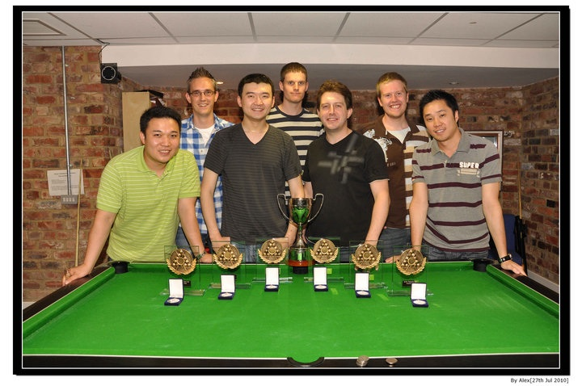

Pool
I just love any game that involves a table, some balls and a cue. I started playing straight billiards once in a while with my father, an uncle or a friend when I was in secondary school, but soon discovered and came to prefer the game of snooker.
In Durham, I joined the Pool Society of Ustinov College. I played for Ustinov's C team in the 2006-2007 season, and in October 2007 I joined the A-team as the only non-smoking player. In the three years that I played for the A-team, we finished third, seventh, and second in the First Division. I ended my Ustinov pool career on a high, being part of the team that won the "Duham University Pool Champions Trophy 2010", or whatever the trophy might be called. See the picture below for the winning team (from left to right: Michael "Fireball" Guo, me, captain Geng Sun, Jon Hopkins, Ian Vernon, Sam Bilson, Frankie Chau).
Apart from playing for the team, I also entered the university singles tournament in 2007 and managed to reach the last 8, before losing to the guy who won the tournament. In 2008, I managed to reach the quarter finals again. Note that I -for some reason- omit to report on the 2009 and 2010 editions...